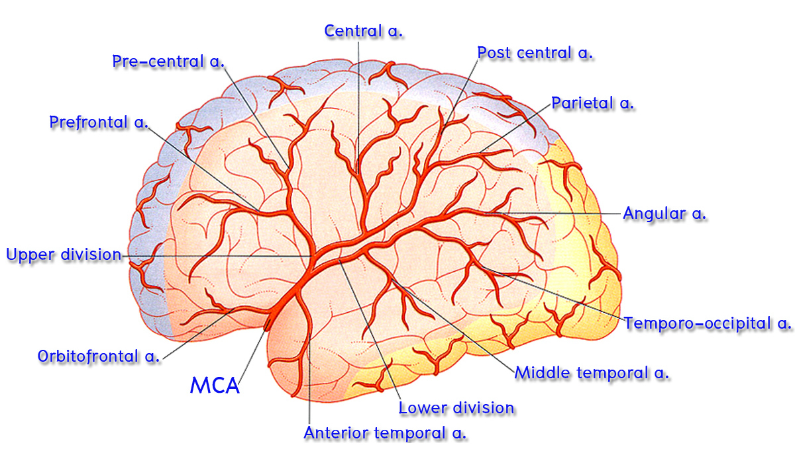

Middle cerebral artery (MCA)
ให้นักศึกษานำสมองทั้งก้อน หรือสมองผ่าซีกที่มีหลอดเลือดติดอยู่ มาศึกษา lateral surface ของ cerebral hemisphere ซึ่งจะพบว่ามีแขนง cortical branches ของ middle cerebral artery ซึ่งลอดออกมาจาก lateral fissure วางอยู่มากมาย

- Orbitofrontal branch ทอดขึ้นมาเลี้ยง inferior frontal gyrus รวมทั้งส่วนหน้าของ frontal lobe
- Precentral branch วางอยู่บน precentral sulcus เลี้ยง frontal lobe บริเวณใกล้เคียง
- Central branch วางอยู่บน central sulcus เลี้ยงทั้ง precentral gyrus และ postcentral gyrus
- Parietal branches วางอยู่สัมพันธ์กับ parietal lobe
- Temporal branches (anterior, middle และ posterior) วางอยู่บน lateral surface ของ temporal lobe
- Angular branch ออกจากปลายด้านหลังสุดของ lateral fissure ไปเลี้ยง angular gyrus และ supramarginal gyrus